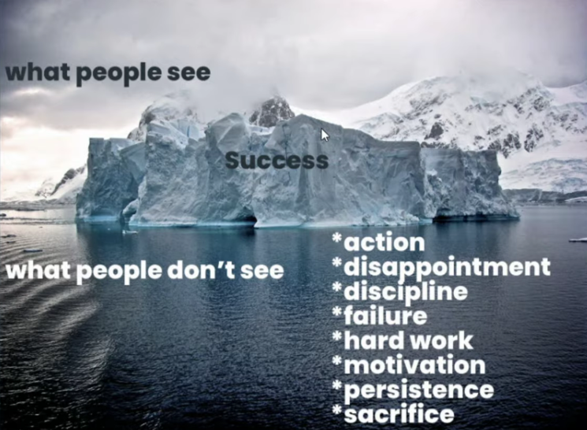
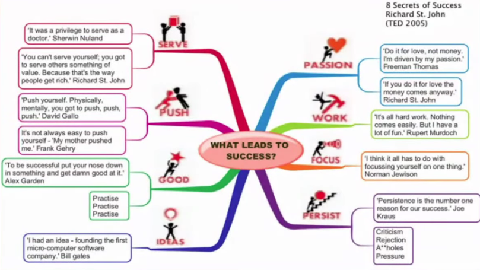

This is not a conventional English course.
This is the place where we make mistakes, we all here to learn. We learn from mistakes.
We are here to develop our skills and learn new ones.
This is a course from programmers.


Mind Map
Track
Achieve Your Goals
I grabbed my earphones off the bedside table and opened the door. My insides lurched and I staggered back as the grey figure snarled and lunged at me. It stopped, right before my face, arms reaching forward, clawing at the air. I shut the door, my heart pounding.
It got me, every time. You would’ve thought I’d be used to it, given that it’s the thirtieth or so time it’s happened, but I just couldn’t get used to it.
I took a deep breath, braced myself, and reopened the door. The corridor and my living room popped up in sight. Back to normal.
I walked through the doorway and took a few deep breaths to calm my nerves.
Those goddamn doors. I shrugged on my jacket and headed out. The front door opened out normally, and I was out on the street in the cold breeze.
I had to figure out what was going on with the doors. Why they sometimes, unpredictably, just opened into this other…place. This place where that dark, shadowy fog of a creature dwelled. From what I’d seen, it was humanoid in form, but nothing else about it seemed human. It looked like a billow of heavy, almost opaque smoke, that was caught and frozen in its form. The creature seemed tethered to its world, somehow. It never could get out of the doors to get to me, not before I slammed them shut in its face.
No one else had been able to see it. The first time it happened, I was with my roommate. I had opened the door, taken one look at it and screamed, stumbling back in horror. My roommate had started, staring at me in shock and puzzlement. I begged her to shut the door and she did. She didn’t see a thing.
I got out of that awkward situation by giving some bullshit excuse about being high and having a bad trip. I didn’t need people to think I was losing it. That I saw things that weren’t there.
Then, it just kept happening. Not always, though. Most times, I would open the door, and it would just be a door. I would just head out or in to wherever I expected to be. But the times it did happen, it never failed to shake me. It was seriously unnerving and stressful, having that thing just there, waiting to pounce. I wondered when the tether would break, and what exactly was holding it back.
I made my way to the library, not for some old school book hunting, but to Google things there. I loved the smell of books and the comfortable familiarity of the library, but I appreciated the efficiency of technology. It was better than being home alone, keeping the doors open and freezing in the cold.
A couple hours later, I’d found nothing solid. There was one site which talked about portals opening up in homes. Apparently, things like holding séances, using an Ouija board, and calling upon Gods or demons could open portals. I’d done none of those recently, not since my last cult meeting. Just kidding. I’d never done any of those things. Maybe I’d participated in some weird activity when I was high, or maybe I had done something I hadn’t known was related to one of those activities?
I went home. My roommate was out partying, as usual. I admired her strength and energy. My partying days were long behind me. Piling my stuff on my chair, I went to the bathroom. Pushing the door open, I winced. It was there again. Growling, thrashing, a mess of dark fumes. Two red glowing points stared right at me. I didn’t move back this time. Against every atom in my body, all of which shrieked at me to run, I stayed where I was. I stared at it, feeling the cold beads of perspiration dripping down my neck. My chest constricted, and my heart pounded violently against its cage in rapid, panicked bursts. I think it wanted to burst from my chest and zoom far, far away from here. It took me a few long minutes before I finally dared to raise my eyes to its. I stared into the glowing hollows. After a few heartbeats, I began to feel an icy heat seep into my soul. It took me a moment to register what I was feeling.
It was rage. Intense, white hot rage. And hatred. Burning, soul-rotting hatred. And the hatred was targeted at someone.
I stepped back, shocked. I knew that someone.
All that rage and hatred, it was targeted at my boss.
Suddenly, the pieces clicked. It made sense now. The one thing that I might have said or done that had led to this doorway appearing. That had led to this thing being here. The timeline made sense too.
A week ago, before it all began, I had been rambling to a friend. My boss was making me work overtime every single day, and on the weekends as well. All for a measly, below average pay. She’d snap at me, yelling obscenities and demeaning insults on an almost daily basis. Then apologise the next day. She’d gaslight me, make me question my abilities and worth as a human being. Then smile sweetly and tell me to forgive her, she had had a bad day. But what I was most worried about, were her threats. She threatened my career if I quit. She was a highly charismatic and intelligent person, which made her that much harder to deal with. Sure, she was making quite a bad name for herself, but she still had considerable influence and links with key figures in the industry. I, on the other hand, was starting out fresh, with my first job being with her company. Her threats ranged from explicit, direct statements of how she would destroy my future, when she was in a mood, to sweetly spoken, thinly veiled warnings.
Needless to say, I was stressed out. I was a wreck. I felt trapped, helpless. Near desperation, on the bad days.
My hair was turning grey decades too early, I was getting random hives and outbreaks on my face and all over my body. I fell sick frequently, but was terrified to take sick leave. She had also cost me something precious, that I couldn’t forgive her for.
But the kicker was when I was made to go into work last week, while down with the flu. We were in the midst of the pandemic, but she made me go into work anyway, to face dozens of clients.
“Do not sneeze. Do whatever it takes, but get your sniffling cleared up, and do not sneeze.” Those were the words she told me when she rejected my application for sick leave.
That night, I hit the bottle hard. I was at a friend’s place, and we were halfway through our second bottle of tequila. That’s when I said, with all my heart, seething with rage, humiliation and loathing, “I wish someone, or something, would just get out there and kill her. Just end her miserable, evil life.” My friend and I had raised a glass to that.
Was it that? Was that what called this doorway into existence? What called that creature here?
It rasped, lunging forward repeatedly, but still held back by something. I stared at it, fascinated. I was no longer terrified by it. It wasn’t looking to hurt me. It was looking to hurt her. What could be holding it back?
For a brief moment, I wished that whatever it was, wouldn’t. That it could be set free. I could feel the resentment buried beneath my skin bubbling up to the surface. In that instant, that thing lunged forward, and in my shock, I realised that it was further through the doorway than it had ever been.
It seemed like it was getting free. All at once, fear rushed in. It couldn’t be set free. I wasn’t a killer. I couldn’t let it do what I’d willed it to. I couldn’t be responsible for a death, whomever’s it might be. It needed to stop. As I thought that, the creature shrieked, and it was dragged back through the doorway.
I slammed the door shut, leant against it, and sank to the floor. I sat there for a while, breathing hard. This couldn’t go on. I had to stop this.
So, I tried to quit the next day. Told my boss that I was done, that I was going to take a long break. I cited mental health reasons, hoping that would allay her anger. She got really quiet. After a minute of no screaming, I began to feel hope. Perhaps she wasn’t going to go nuts on me. Perhaps she’d let me go amicably. Maybe, she wasn’t that bad a person. I could dial down the rage, the resentment. That thing would disappear.
“I’ve been tracking your emails.” She said quietly. “You sent an office email to your personal account, and that is against your contract.”
I stared at her, uncomprehending.
“You’ve broken your contract, violated the confidentiality clause. You’re fired. As of this moment.”
I stepped back, reeling. Fired. I’d been fired from my first job. Even in a state of shock, I knew this spelt the death of my career. She’d twist everything around. She’d paint a picture of ineptitude and unethical behaviours. She’d spread rumours, she’d make calls.
I felt sick. Nauseated. Tears prickled my eyes, but I could not let her see them. I turned, forcing myself to stand tall. Then I stalked toward the door and opened it.
The creature pitched forward, pulling frantically against its tether. I paused, staring at it for what felt like forever.
“Oh, and all your leave will be forfeit. You’d also have to pay me back for the medical claims you’d made, since you did not finish out the year. Plus, you owe me,” she paused, typing on her laptop for a moment, “three thousand dollars for my professional consultation, for all the guidance I’ve given you, since you did not finish out the two years on the contract.”
I stared straight ahead at its glowing eyes. My body felt rigid with humiliation and rage.
Then I smiled.